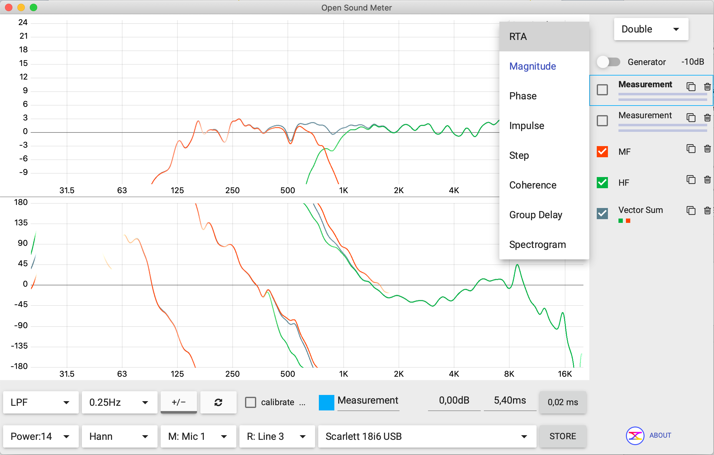
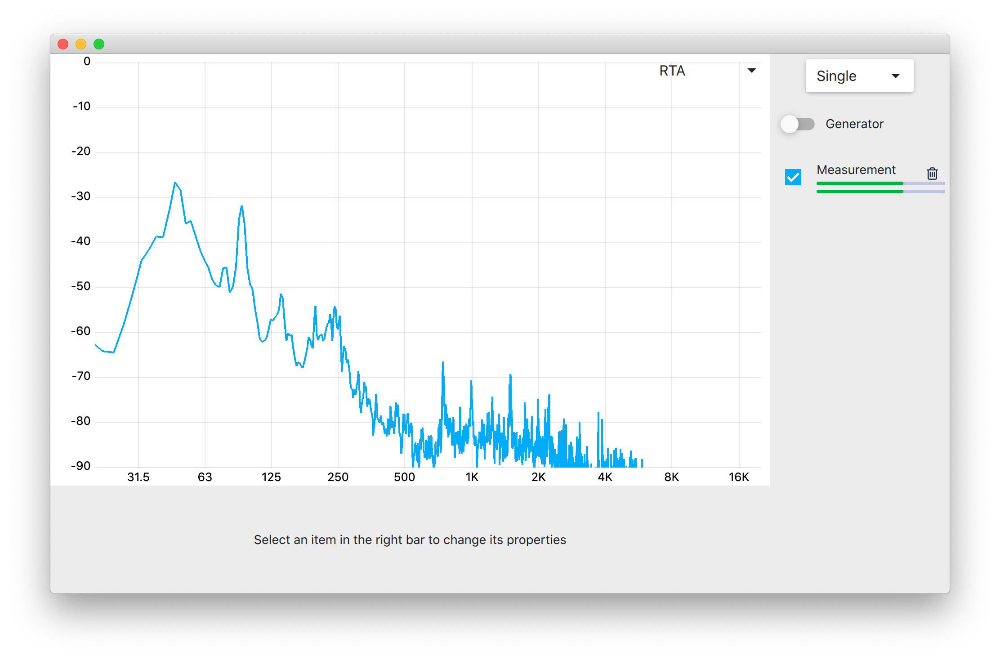
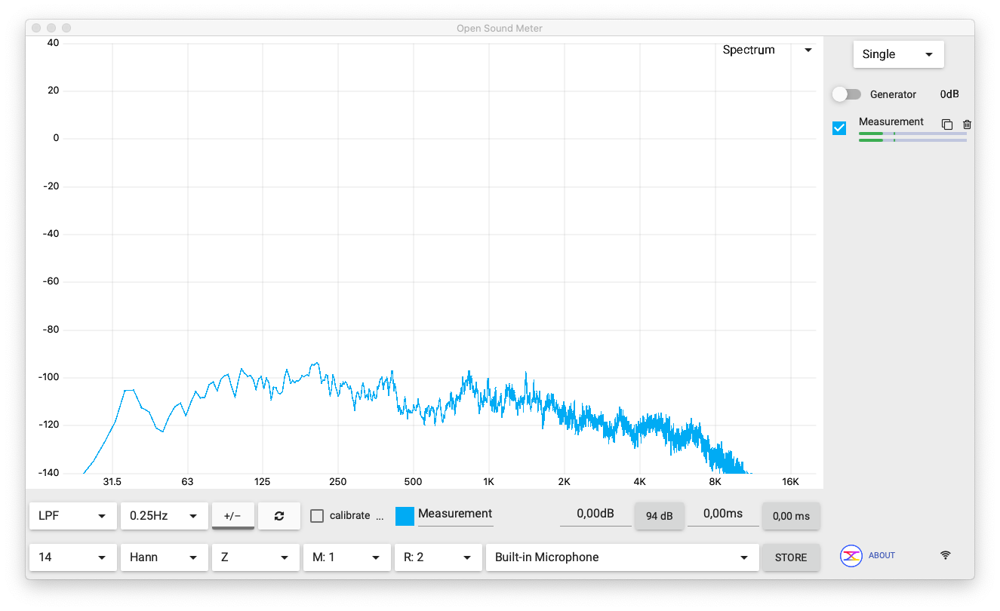
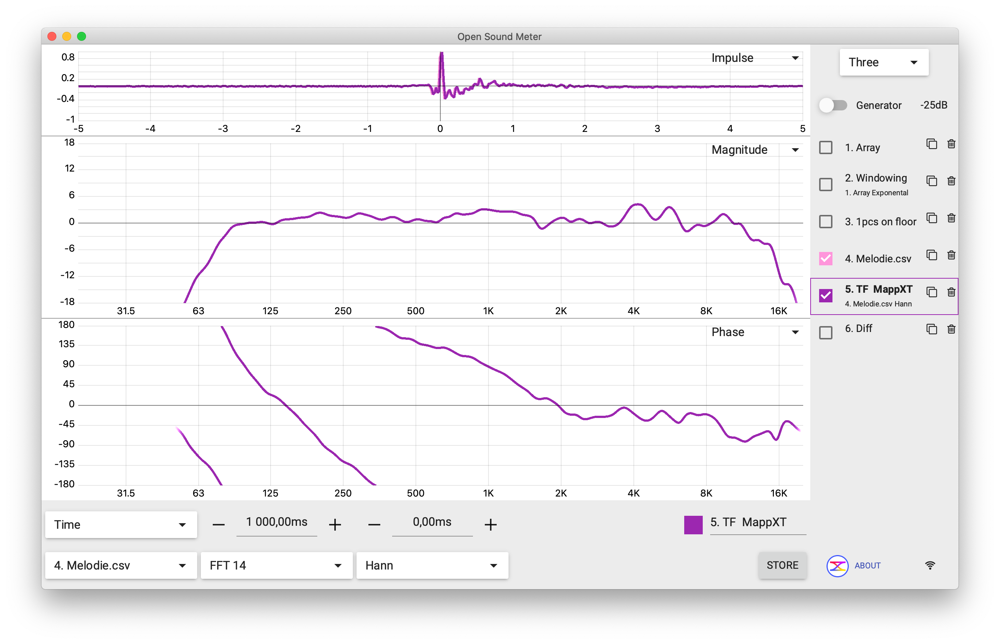

O OSM tem 9 tipos diferentes de gráfico, escolhidos no dropdown que fica no canto superior direito de cada gráfico. Cada um responde a uma pergunta diferente sobre o sistema de som — e em alinhamento você vai usar uma combinação deles, não um só.

Vou agrupar os 9 em três famílias, porque eles respondem a perguntas relacionadas:
- Frequência sem referência (1 fonte): RTA, Spectrum
- Função de transferência (2 fontes — entrada e saída do sistema): Magnitude, Phase, Coherence, Group Delay
- Domínio do tempo (resposta a impulso): Impulse, Step
Mais Spectrogram, que é "tempo + frequência ao mesmo tempo" — não cabe nas três famílias acima.
Família 1: Frequência sem referência
Esses dois mostram quanto de cada frequência existe no sinal que está chegando no microfone, sem comparar com nada. Servem para medir ruído ambiente, equalizar uma sala, ou ver o que sai naturalmente da caixa.
RTA — Real-Time Analyzer

RTA divide o espectro em bandas de oitava (ou 1/3 de oitava) e mostra quanta energia tem em cada banda como uma barra. É a forma mais antiga e direta de ver "onde está o som". Use para:
- Medir ruído ambiente (ar condicionado, gerador, multidão).
- Equalizar uma sala com ruído rosa — gera ruído rosa pela caixa, mede com RTA, e corta as bandas que sobem demais.
- Ver instantaneamente se o sistema tem grave/médio/agudo equilibrado.
Spectrum

Spectrum mostra cada frequência individual, em vez de agrupar em bandas. É o que aparece quando você abre o OSM pela primeira vez. Use para:
- Identificar uma frequência específica que está microfonizando (você vê o pico exato).
- Análise mais detalhada do que o RTA permite.
- Ver harmônicos de instrumentos.
Família 2: Função de transferência
Aqui o OSM compara dois sinais ao mesmo tempo: o que entrou no sistema (referência, canal R:) e o que saiu no microfone (medição, canal M:). Essa comparação é a base de medição séria de áudio. Veja o Infográfico 04 sobre função de transferência.
Magnitude
Mostra o quanto cada frequência foi reforçada ou cortada pelo sistema, de 0 dB para frequências que passaram inalteradas, positivo para frequências reforçadas, negativo para frequências cortadas. É o que você "espera" que seja "plano" numa caixa boa.
Phase
Mostra o atraso de cada frequência em graus (de -180° a +180°). Quando duas caixas tocam a mesma frequência e estão em fases diferentes, elas cancelam. Phase é como você vê isso antes que aconteça.
Magnitude e Phase quase sempre aparecem juntos, em modo Double:

Coherence
Vai de 0 a 1. Indica quão confiável é a medição naquele ponto. 1 = sinal e referência estão correlacionados, medição é confiável. 0 = só ruído, ignore o que a Magnitude e Phase mostram ali. Veja o Infográfico 02 sobre coerência.
Regra prática: em qualquer frequência onde a Coherence está abaixo de ~0.8, o gráfico de Magnitude e Phase ali pode estar mentindo. Você precisa promediar mais, aumentar nível do sinal, ou aceitar que aquela parte da medição não vale.
Group Delay
Mostra o atraso de cada frequência em milissegundos (em vez de graus). É outra forma de olhar para a mesma informação que a Phase mostra, mas mais intuitiva para alinhamento prático — você vê "essa frequência chegou 3 ms depois daquela".
Em alinhamento de sub + top, Group Delay é uma das ferramentas para ajustar delay de uma caixa em relação à outra na frequência de crossover.
Família 3: Domínio do tempo
Esses dois respondem à pergunta: "o que acontece quando eu mando um pulso curto pelo sistema?" Não estamos olhando para frequências — estamos olhando para o tempo, milissegundo por milissegundo.
Impulse
Resposta a impulso. O OSM manda um sinal de banda larga (sweep, MLS, pink noise) pelo sistema e calcula matematicamente qual seria a resposta a um pulso ideal. O resultado: um pico na hora em que o som chega no microfone, mais ecos depois.
O Impulse é a base de delay finder (medir o atraso entre fonte e microfone) — veja o Infográfico 03. O pico maior do gráfico aparece no tempo de chegada, e a partir dali se aplica delay para "trazer o pico para zero".
Step
Resposta ao degrau — a integral matemática da resposta a impulso. Em vez de mostrar "o pulso chegou agora", mostra "como o sistema responde quando o sinal sobe e fica em cima". Útil para análise mais avançada de sistemas de subwoofer e cancelamento.
Em igreja, Step quase não vai ser usado no dia a dia — é mais ferramenta de quem desenha sistemas de PA.
Bônus: Spectrogram
Spectrogram mostra tempo, frequência e amplitude ao mesmo tempo, como um mapa térmico (waterfall). Tempo no eixo horizontal, frequência no eixo vertical, cor indicando energia.
Em igreja serve para:
- Ver decay de frequências graves no templo (quanto tempo o sub continua "ressoando" depois que parou).
- Identificar visualmente padrões de feedback que vão crescendo.
- Diagnosticar problemas que aparecem só em momentos específicos do culto.
Resumo: que gráfico usar quando
| Você quer… | Use |
|---|---|
| Equalizar uma sala rapidamente | RTA |
| Identificar uma frequência problemática específica | Spectrum |
| Medir a resposta de frequência de uma caixa | Magnitude + Phase + Coherence |
| Alinhar sub + top | Phase + Group Delay + Impulse |
| Descobrir o atraso entre a mesa e o microfone | Impulse (delay finder) |
| Ver reverberação ao longo do tempo | Spectrogram |
Para alinhamento de igreja, deixe o OSM em modo Double com Magnitude em cima e Phase embaixo. Use a Coherence como "luzinha" no fundo da sua atenção — quando ela cair, você sabe que precisa promediar mais antes de tomar decisão. Reserve RTA e Spectrogram para casos específicos.
O essencial pra reter desta página
- Há 9 tipos de gráfico, agrupados em 3 famílias: frequência sem referência, função de transferência, e tempo.
- RTA e Spectrum precisam só do microfone — bons para EQ de sala e identificar ruído.
- Magnitude, Phase, Coherence, Group Delay precisam de microfone + referência da mesa — base de alinhamento de caixas.
- Impulse e Step trabalham no tempo, não na frequência. Impulse é o que mede atraso.
- Spectrogram é o waterfall — tempo, frequência e energia juntos.